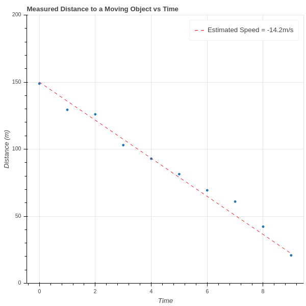
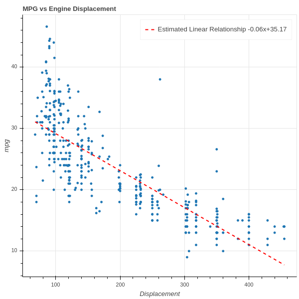
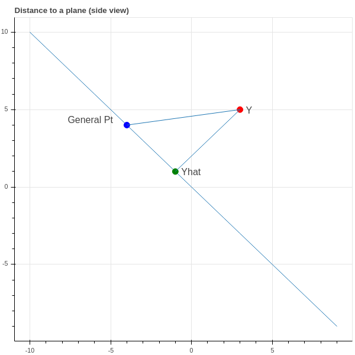
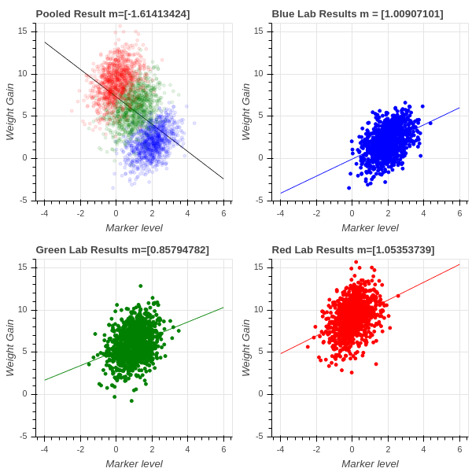

1 Linear Regression
1.1 Introduction
Suppose studying two quantities \(x\) and \(y\) that we suspect are related – at least approximately – by a linear equation \(y=ax+b\). Sometimes this linear relationship is predicted by theoretical considerations, and sometimes it is just an empirical hypothesis.
For example, if we are trying to determine the velocity of an object travelling towards us at constant speed, and we measure the distances \(d_1, d_2, \ldots, d_n\) between us and the object at a series of times \(t_1, t_2, \ldots, t_n\), then since “distance equals rate times time” we have a theoretical foundation for the assumption that \(d=rt+b\) for some constants \(r\) and \(b\). On the other hand, because of unavoidable experimental errors, we can’t expect that this relationship will hold exactly for the observed data; instead, we likely get a graph like that shown in Figure 1.1. We’ve drawn a line on the plot that seems to capture the true slope (and hence velocity) of the object.

On the other hand, we might look at a graph such as Figure 1.2, which plots the gas mileage of various car models against their engine size (displacement), and observe a general trend in which bigger engines get lower mileage. In this situation we could ask for the best line of the form \(y=mx+b\) that captures this relationship and then draw empirical conclusions about this data without necessarily having an underlying theory.

1.2 Least Squares (via Calculus)
In either of the two cases above, the question we face is to determine the line \(y=mx+b\) that “best fits” the data \(\{(x_i,Y_i)\}_{i=1}^{N}\). The classic approach is to determine the equation of a line \(y=mx+b\) that minimizes the “mean squared error”:
\[ MSE(m,b) = \frac{1}{N}\sum_{i=1}^{N} (Y_i-mx_i-b)^2 \]
It’s worth emphasizing that the \(MSE\) is a function of two variables – the slope \(m\) and the intercept \(b\) – and that the data points \(\{(x_i,Y_i)\}\) are constants for these purposes. Furthermore, it’s a quadratic function in those two variables. Since our goal is to find \(m\) and \(b\) that minimize the \(MSE\), we have a Calculus problem that we can solve by taking partial derivatives and setting them to zero.
To simplify the notation, let’s abbreviate \(MSE\) by \(E\).
\[ \begin{aligned} \frac{\partial E}{\partial m} &= -\frac{1}{N}\sum_{i=1}^{N} 2x_i(Y_i-mx_i-b) \\ \frac{\partial E}{\partial b} &= -\frac{1}{N}\sum_{i=1}^{N} 2(Y_i-mx_i-b) \\ \end{aligned} \]
We set these two partial derivatives to zero, so we can drop the \(-2\) and regroup the sums to obtain two equations in two unknowns (we keep the \(\frac{1}{N}\) because it is illuminating in the final result):
\[ \begin{aligned} \frac{1}{N}(\sum_{i=1}^{N} x_i^2)m &+& \frac{1}{N}(\sum_{i=1}^{N} x_i)b &=& \frac{1}{N}\sum_{i=1}^{N} x_i Y_i \\ \frac{1}{N}(\sum_{i=1}^{N} x_i)m &+& b &=& \frac{1}{N}\sum_{i=1}^{N} Y_{i} \\ \end{aligned} \tag{1.1}\]
In these equations, notice that \(\frac{1}{N}\sum_{i=1}^{N} x_i\) is the average (or mean) value of the \(x_i\). Let’s call this \(\overline{x}\). Similarly, \(\frac{1}{N}\sum_{i=1}^{N} Y_{i}\) is the mean of the \(Y_i\), and we’ll call it \(\overline{Y}\). If we further simplify the notation and write \(S_{xx}\) for \(\frac{1}{N}\sum_{i=1}^{N} x_i^2\) and \(S_{xy}\) for \(\frac{1}{N}\sum_{i=1}^{N}x_iY_i\) then we can write down a solution to this system using Cramer’s rule:
\[ \begin{aligned} m &= \frac{S_{xy}-\overline{x}\overline{Y}}{S_{xx}-\overline{x}^2} \\ b &= \frac{S_{xx}\overline{Y}-S_{xy}\overline{x}}{S_{xx}-\overline{x}^2} \\ \end{aligned} \tag{1.2}\]
where we must have \(S_{xx}-\overline{x}^2\neq 0\).
1.2.1 Exercises
Verify that Equation 1.2 is in fact the solution to the system in Equation 1.1 .
Suppose that \(S_{xx}-\overline{x}^2=0\). What does that mean about the \(x_i\)? Does it make sense that the problem of finding the “line of best fit” fails in this case?
1.3 Least Squares (via Geometry)
In our discussion above, we thought about our data as consisting of \(N\) pairs \((x_i,Y_i)\) corresponding to \(N\) points in the \(xy\)-plane \(\mathbf{R}^2\). Now let’s turn that picture “on its side”, and instead think of our data as consisting of two points in \(\mathbf{R}^{N}\):
\[ X=\left[\begin{matrix} x_1\cr x_2\cr \vdots\cr x_N\end{matrix}\right] \mathrm{\ and\ } Y = \left[\begin{matrix} y_1\cr y_2\cr \vdots\cr y_N\end{matrix}\right] \]
Let’s also introduce one other vector
\[ E = \left[\begin{matrix} 1 \cr 1 \cr \vdots \cr 1\end{matrix}\right]. \]
First, let’s assume that \(E\) and \(X\) are linearly independent. If not, then \(X\) is a constant vector (why?), which we already know is a problem from Section 1.2, Exercise 2. Therefore \(E\) and \(X\) span a plane in \(\mathbf{R}^{N}\).

Now if our data points \((x_i,Y_i)\) all did lie on a line \(y=mx+b\), then the three vectors \(X\), \(Y\), and \(E\) would be linearly dependent:
\[ Y = mX + bE. \]
Since our data is only approximately linear, that’s not the case. So instead we look for an approximate solution. One way to phrase that is to ask:
What is the point \(\hat{Y}\) in the plane \(H\) spanned by \(X\) and \(E\) in \(\mathbf{R}^{N}\) which is closest to \(Y\)?
If we knew this point \(\hat{Y}\), then since it lies in \(H\) we would have \(\hat{Y}=mX+bE\) and the coefficients \(m\) and \(b\) would be a candidate for defining a line of best fit \(y=mx+b\). Finding the point in a plane closest to another point in \(\mathbf{R}^{N}\) is a geometry problem that we can solve.
Proposition: The point \(\hat{Y}\) in the plane spanned by \(X\) and \(E\) is the point such that the vector \(Y-\hat{Y}\) is perpendicular to \(H\).
Proof: See Figure 1.3 for an illustration – perhaps you are already convinced by this, but let’s be careful. We seek \(\hat{Y}=mX+bE\) such that \[ D = \|Y-\hat{Y}\|^2 = \|Y-mX-bE\|^2 \] is minimal. Using some vector calculus, we have \[ \frac{\partial D}{\partial m} = \frac{\partial}{\partial m} (Y-mX-bE)\cdot (Y-mX-bE) = -2(Y-mX-bE)\cdot X \] and \[ \frac{\partial D}{\partial b} = \frac{\partial}{\partial b} (Y-mX-bE)\cdot (Y-mX-bE) = -2(Y-mX-bE)\cdot E. \]
So both derivatives are zero exactly when \(Y-\hat{Y}=(Y-mX-bE)\) is orthogonal to both \(X\) and \(E\), and therefore every vector in \(H\).
We also obtain equations for \(m\) and \(b\) just as in our first look at this problem.
\[ \begin{aligned} m(X\cdot E) &+ b(E\cdot E) &= (Y\cdot E) \cr m(X\cdot X) &+ b(E\cdot X) &= (Y\cdot X) \cr \end{aligned} \tag{1.3}\]
We leave it as an exercise below to check that these are the same equations that we obtained in Equation 1.2.
1.3.1 Exercises
- Verify that Equation 1.2 and Equation 1.3 are equivalent.
1.4 The Multivariate Case (Calculus)
Having worked through the problem of finding a “line of best fit” from two points of view, let’s look at a more general problem. We looked above at a scatterplot showing the relationship between gas mileage and engine size (displacement). There are other factors that might contribute to gas mileage that we want to consider as well – for example:
- a car that is heavy compared to its engine size may get worse mileage
- a sports car with a drive train that gives fast acceleration as compared to a car with a transmission designed for long trips may have different mileage for the same engine size.
Suppose we wish to use engine displacement, vehicle weight, and acceleration all together to predict mileage. Instead of looking at points \((x_i,Y_i)\) where \(x_i\) is the displacement of the \(i^{\text{th}}\) car model and we try to predict a value \(y\) from a corresponding \(x\) as \(y=mx+b\) – let’s look at a situation in which our measured value \(y\) depends on multiple variables – say displacement \(d\), weight \(w\), and acceleration \(a\) with \(k=3\) – and we are trying to find the best linear equation
\[ y=M_1 d + M_2 w + M_3 a +b \tag{1.4}\]
But to handle this situation more generally we need to adopt a convention that will allow us to use indexed variables instead of \(d\), \(w\), and \(a\). We will use the tidy data convention.
Tidy Data: A dataset is tidy if it consists of values \(x_{ij}\) for \(i=1,\ldots,N\) and \(j=1,\ldots, k\) so that:
- the row index corresponds to a sample – a set of measurements from a single event or item;
- the column index corresponds to a feature – a particular property measured for all of the events or items.
In our case,
- the samples are the different types of car models,
- the features are the properties of those car models.
For us, \(N\) is the number of different types of cars, and \(k\) is the number of properties we are considering. Since we are looking at displacement, weight, and acceleration, we have \(k=3\).
So the “independent variables” for a set of data that consists of \(N\) samples, and \(k\) measurements for each sample, can be represented by a \(N\times k\) matrix
\[ X = \left(\begin{matrix} x_{11} & x_{12} & \cdots & x_{1k} \\ x_{21} & x_{22} & \cdots & x_{2k} \\ \vdots & \vdots & \ddots & \vdots \\ x_{N1} & x_{N2} & \cdots & x_{Nk} \\ \end{matrix}\right) \]
and the measured dependent variables \(Y\) are a column vector
\[ Y = \left[\begin{matrix} y_1 \\ y_2 \\ \vdots \\ y_N\end{matrix}\right]. \]
If \(M_1,\ldots, M_k\) are “slopes” associated with these properties in Equation 1.4, and \(b\) is the “intercept”, then the predicted value \(\hat{Y}\) is given by a matrix equation
\[ \hat{Y} = X\left[\begin{matrix} M_1 \\ M_2 \\ \cdots \\ M_k\end{matrix}\right]+\left[\begin{matrix} 1 \\ 1 \\ \cdots \\ 1\end{matrix}\right]b \]
and our goal is to choose these parameters \(M_i\) and \(b\) to make the mean squared error:
\[ MSE(M_1,\ldots, M_k,b) = \|Y-\hat{Y}\|^2 = \sum_{i=1}^{N} (Y_i - \sum_{j=1}^{k} x_{ij}M_j -b )^2. \]
Here we are summing over the \(N\) different car models, and for each model taking the squared difference between the true mileage \(Y_i\) and the “predicted” mileage \(\sum_{j=1}^{k} x_{ij}M_j +b\). We wish to minimize this MSE.
Let’s make one more simplification. The intercept variable \(b\) is annoying because it requires separate treatment from the \(M_i\). But we can use a trick to eliminate the need for special treatment. Let’s add a new feature to our data matrix (a new column) that has the constant value \(1\).
\[ X = \left(\begin{matrix} x_{11} & x_{12} & \cdots & x_{1k} & 1\\ x_{21} & x_{22} & \cdots & x_{2k} & 1\\ \vdots & \vdots & \ddots & \vdots & 1\\ x_{N1} & x_{N2} & \cdots & x_{Nk} & 1\\ \end{matrix}\right) \]
Now our data matrix \(X\) is \(N\times(k+1)\) and we can put our “intercept” \(b=M_{k+1}\) into our vector of “slopes” \(M_1, \ldots, M_k,M_{k+1}\):
\[ \hat{Y} = X\left[\begin{matrix} M_1 \\ M_2 \\ \cdots \\ M_k \\ M_{k+1}\end{matrix}\right] \]
and our MSE becomes
\[ MSE(M) = \|Y - XM\|^2 \]
where
\[ M=\left[\begin{matrix} M_1 \\ M_2 \\ \cdots \\ M_k \\ M_{k+1}\end{matrix}\right]. \]
Remark: Later on (see {Section 1.6}) we will see that if we “center” our features about their mean, by subtracting the average value of each column of \(X\) from that column; and we also subtract the average value of \(Y\) from the entries of \(Y\), then the \(b\) that emerges from the least squares fit is zero. As a result, instead of adding a column of \(1\)’s, you can change coordinates to center each feature about its mean, and keep your \(X\) matrix \(N\times k\).
The Calculus approach to minimizing the \(MSE\) is to take its partial derivatives with respect to the \(M_{i}\) and set them to zero. Let’s first work out the derivatives in a nice form for later.
Proposition: The gradient of \(MSE(M)=E\) is given by
\[ \nabla E = \left[\begin{matrix} \frac{\partial}{\partial M_1}E \\ \frac{\partial}{\partial M_2}E \\ \vdots \\ \frac{\partial}{\partial M_{k+1}}E\end{matrix}\right] = -2 X^{\intercal}Y + 2 X^{\intercal}XM \tag{1.5}\]
where \(X^{\intercal}\) is the transpose of \(X\).
Proof:
Since \[ E =\sum_{j=1}^{N} (Y_j-\sum_{s=1}^{k+1} X_{js}M_{s})^2 \]
we can use the chain rule to compute:
\[ \frac{\partial}{\partial M_t}E = -2\sum_{j=1}^{N} X_{jt}(Y_{j}-\sum_{s=1}^{k+1} X_{js}M_{s}) \tag{1.6}\]
If we look closely at this expression, we can see that it is the dot product of the \(t^{th}\) column of the \(N\times (k+1)\) matrix \(X\) with the \(N\)-dimensional column vector \((Y-XM)\). Given the structure of the gradient as a column vector, this means \[ \nabla E = -2X^{\intercal}(Y-XM)=-2X^{\intercal}Y+2X^{\intercal}XM \] as claimed.
Proposition: Assume that \(D=X^{\intercal}X\) is invertible (notice that it is a \((k+1)\times(k+1)\) square matrix so this makes sense). The solution \(M\) to the multivariate least squares problem is \[ M = D^{-1}X^{\intercal}Y \tag{1.7}\] and the “predicted value” \(\hat{Y}\) for \(Y\) is
\[ \hat{Y} = XD^{-1}X^{\intercal}Y. \tag{1.8}\]
1.5 The Multivariate Case (Geometry)
Let’s look more closely at the equation obtained by setting the gradient of the error, Equation 1.5, to zero. Remember that \(M\) is the unknown vector in this equation, everything else is known:
\[ X^{\intercal}Y = X^{\intercal}XM \]
Here is how to think about this:
As \(M\) varies, the \(N\times 1\) matrix \(XM\) varies over the space spanned by the columns of the matrix \(X\). So as \(M\) varies, \(XM\) is a general element of the subspace \(H\) of \(\mathbf{R}^{N}\) spanned by the \(k+1\) columns of \(X\).
The product \(X^{\intercal}XM\) is a \((k+1)\times 1\) matrix. Each entry is the dot product of the general element of \(H\) with one of the \(k+1\) basis vectors of \(H\).
The product \(X^{\intercal}Y\) is a \((k+1)\times 1\) matrix whose entries are the dot product of the basis vectors of \(H\) with \(Y\).
Therefore, this equation asks for us to find \(M\) so that the vector \(XM\) in \(H\) has the same dot products with the basis vectors of \(H\) as \(Y\) does. The condition
\[ X^{\intercal}(Y-XM)=0 \]
says that \(Y-XM\) is orthogonal to \(H\). This argument establishes the following proposition.
Proposition: Just as in the simple one-dimensional case, the predicted value \(\hat{Y}\) of the least squares problem is the point in \(H\) closest to \(Y\) – or in other words the point \(\hat{Y}\) in \(H\) such that \(Y-\hat{Y}\) is perpendicular to \(H\).
1.5.1 Orthogonal Projection
Recall that we introduced the notation \(D=X^{\intercal}X\), and let’s assume, for now, that \(D\) is an invertible matrix. We have the formula (see Equation 1.8):
\[ \hat{Y} = XD^{-1}X^{\intercal}Y. \] Proposition: The matrix \(P=XD^{-1}X^{\intercal}\) is an \(N\times N\) matrix called the orthogonal projection operator onto the subspace \(H\) spanned by the columns of \(X\). It has the following properties:
- \(PY\) belongs to the subspace \(H\) for any \(Y\in\mathbf{R}^{N}\).
- \((Y-PY)\) is orthogonal to \(H\).
- \(PP = P\).
Proof: First of all, \(PY=XD^{-1}X^{\intercal}Y\) so \(PY\) is a linear combination of the columns of \(X\) and is therefore an element of \(H\). Next, we can compute the dot product of \(PY\) with each basis vector of \(H\) by computing
\[ X^{\intercal}PY = X^{\intercal}XD^{-1}X^{\intercal}Y = X^{\intercal}Y \]
since \(X^{\intercal}X=D\). This equation means that \(X^{\intercal}(Y-PY)=0\) which tells us that \(Y-PY\) has dot product zero with each basis vector of \(H\). Finally,
\[ PP = XD^{-1}X^{\intercal}XD^{-1}X^{\intercal} = XD^{-1}X^{\intercal}=P. \]
It should be clear from the above discussion that the matrix \(D=X^{\intercal}X\) plays an important role in the study of this problem. In particular it must be invertible or our analysis above breaks down. In the next section we will look more closely at this matrix and what information it encodes about our data.
1.6 Centered coordinates
In our discussion above, we introduced an artificial column of ones into our data matrix. This accounts for the intercept (or “bias term”) \(b\) in the linear equation \[ y = M_1 x_1 + \cdots + M_k x_k + b. \]
An alternative to this approach is to make a simple change of coordinates in our data so that the fitted bias becomes zero. Then we can ignore it and just work with \(k\) features and weights.
Remember the basic equation \[ X^{\intercal}(Y-XM)=0 \] that determines the solution to the least squares problem. Looking at the last row of this equation, and using that the last column of \(X\) is the \(N\)-dimensional column vector \(E\) consisting entirely of ones, we see that at the solution point, \[ E\cdot (Y-XM)=0. \]
But \(E\cdot Y=\sum_{i=1}^{N} Y_{i}\) is the sum of the target values. Furthermore, since \(XM\) is the vector \(\hat{Y}\) of predicted values, \(E\cdot XM\) is the sum of the predicted values. Dividing by \(N\), we see that, at the least squares solution point, the mean of \(Y\) equals the mean of \(\hat{Y}\).
Averaging the component equations for \(\hat{Y}_i\) gives \[ \hat{Y}_{i} = x_{i1}M_1 + x_{i2}M_{2} + \cdots + x_{ik}M_k + b \] and dividing by \(N\) tells us that \[ \overline{\hat{Y}} = \overline{x}_{1}M_1 + \overline{x}_{2}M_2 + \cdots + \overline{x}_{k}M_k + b \] where \(\overline{x}_{i}\) is the mean of the \(i^{\text{th}}\) feature. As a result, we see that the bias \(b\) is \[ b=\overline{Y}-\sum_{i=1}^{k}\overline{x}_{i}M_{i} \]
We can exploit this by a “trick”. Before we start our analysis, we can change coordinates for both the features and the target so that the mean of the target data, and the mean of each feature, is zero. This amounts to a “shift” in the measurement scale of each feature, so it’s essentially harmless.
If we begin with this shift, then we know a priori that the bias is zero, and so there’s no need to include it in our calculations and there’s no need to introduce a column of ones into our data matrix.
Everything else we did remains the same, but we have an \(N\times k\) matrix to work with instead of \(N\times (k+1)\).
1.7 Caveats about Linear Regression
1.7.1 Basic considerations
Reflecting on our long discussion up to this point, we should take note of some of the potential pitfalls that lurk in the use of linear regression.
When we apply linear regression, we are explicitly assuming that the variable \(Y\) is associated to \(X\) via linear equations. This is a big assumption!
When we use multilinear regression, we are assuming that changes in the different features have independent effects on the target variable \(Y\). In other words, suppose that \(Y=ax_1+bx_2\). Then an increase of \(x_1\) by \(1\) increases \(Y\) by \(a\), and an increase of \(x_2\) by \(1\) increases \(Y\) by \(b\). These effects are independent of one another and combine to yield an increase of \(a+b\).
We showed in our discussion above that the linear regression problem has a solution when the matrix \(D=X^{\intercal}X\) is invertible, and this happens when the columns of \(X\) are linearly independent. When working with real data, which is messy, we could have a situation in which the features we are studying are, in fact, dependent – but because of measurement error, the samples that we collected need not be. As a result, the matrix \(D\) will be “close” to being non-invertible, although formally still invertible. In this case, computing \(D^{-1}\) leads to numerical instability and the solution we obtain is very unreliable.
1.7.2 Simpson’s Effect
Simpson’s effect is a famous phenomenon that illustrates that linear regression can be very misleading in some circumstances. It is often a product of “pooling” results from multiple experiments. Suppose, for example, that we are studying the relationship between a certain measure of blood chemistry and an individual’s weight gain or loss on a particular diet. We do our experiments in three labs, the blue, green, and red labs. Each lab obtains similar results – higher levels of the blood marker correspond to greater weight gain, with a regression line of slope around 1. However, because of differences in the population that each lab is studying, some populations are more susceptible to weight gain and so the red lab sees a mean increase of almost 9 lbs while the blue lab sees a weight gain of only 3 lbs on average.
The three groups of scientists pool their results to get a larger sample size and do a new regression. Surprise! Now the regression line has slope \(-1.6\) and increasing amounts of the marker seem to lead to less weight gain!
This is called Simpson’s effect, or Simpson’s paradox, and it shows that unknown factors (confounding factors) may cause linear regression to yield misleading results. This is particularly true when data from experiments conducted under different conditions are combined; in this case, the differences in experimental settings, called batch effects, can throw off the analysis very dramatically. See Figure 1.4.

1.7.3 Exercises
- When proving that \(D\) is invertible if and only if the columns of \(X\) are linearly independent, we argued that if \(X^{\intercal}Xm=0\) for a nonzero vector \(m\), then \(Xm\) is orthogonal to the span of the columns of \(X\), and is also an element of that span, and therefore it is zero. Provide the details: show that if \(H\) is a subspace of \(\mathbf{R}^{N}\), and \(x\) is a vector in \(H\) such that \(x\cdot h=0\) for all \(h\in H\), then \(x=0\).